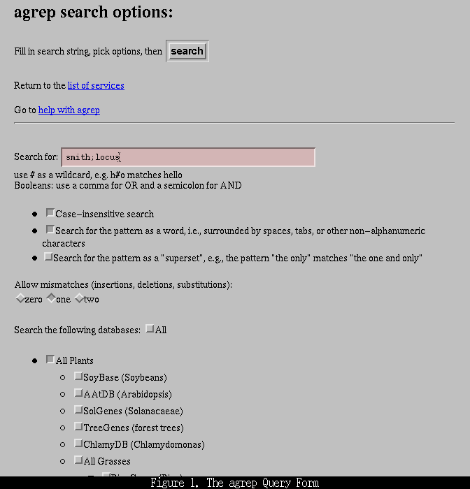
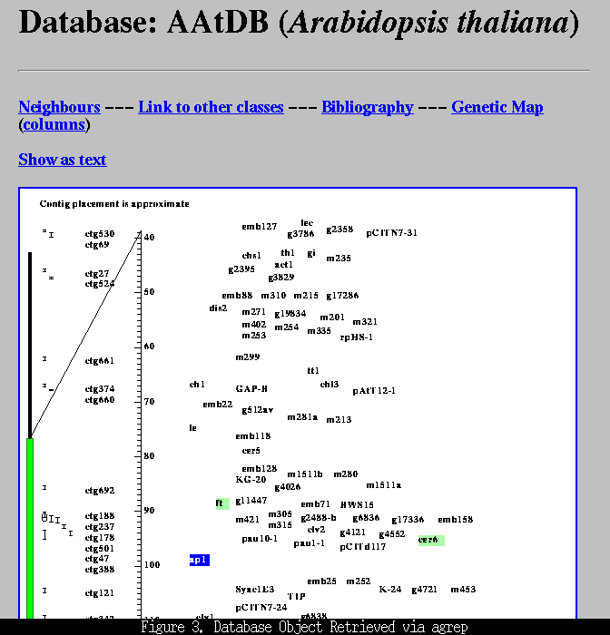

Using Fuzzy Searching to Retrieve Plant Genome Information at the USDA, National Agricultural Library
Douglas W. Bigwood
Manager, Genome Informatics Group
USDA, NAL, ISD
10301 Baltimore Blvd.
Beltsville, MD 20705
USA
dbigwood@nalusda.gov
One of the difficulties in searching any data resource is the lack of a facility to find items that are close to, but not exactly like, the search term(s) of interest. Wildcarding (e.g., the use of asterisks in some search software) aids the user to a certain degree, but often the results returned are not exactly what is desired. A fuzzy searching facility, using a program called agrep, is provided on the Agricultural Genome World Wide Web Server at the National Agricultural Library. A brief description of how to use this facility, along with some hints and examples, follows.
To connect with the agrep search form open the following URL in your World Wide Web browser:
http://probe.nalusda.gov:8300/agrepquery.html
You will be presented with a form similar to that shown in Figure 1, below:

The form allows you to select three search parameters; case- sensitivity (default: case-insensitive), whether to search for the pattern as a "word" (as opposed to the possibility of the pattern being embedded anywhere in the text; default: search for pattern as a word), and whether or not to search for the pattern as a superset (e.g., "the only" matches "the one and only"; default: do not search for pattern as a superset). You may also select zero, one, or two mismatches. A mismatch may be an insertion (e.g., "Lansberg" will match "Landsberg"), a deletion ("adh-1" will match "adh1", or a substitution ("Smith" will match "Smyth"). A cautionary note: allowing two mismatches can result in a slew of unexpected results, particularly if one short search term is used. For example, searching for the pattern "adh" with two mismatches will bring back any object containing an a, d, or h.
One simple, but common, use for agrep is to account for differences in the British and American spellings of various words such a center/centre and color/colour. Other common usages include searching for a person's name for which you are unsure of the spelling, and to accommodate slight differences in gene nomenclature among taxa.
Search terms can be combined to perform boolean searches using a terse notation: "this,that" translates to "this or that"; "here;there" translates to "here and there". The wildcard character is "#" and it can be used anywhere in the search term(s).
The agrep form also provides a suite of plant and other databases to search. These can be searched together or selected a la carte. Because there is a limit of 1000 objects, this is a useful way of limiting your search. In addition, because agrep searching involves paging through large text files, you can save time by selecting only the databases of interest.
The results document (Figure 2, below)

presents you with a list of objects that match the search terms. At the top of this document the search string is displayed along with the databases that were searched. The names of the objects that contain the search string are then listed, grouped by the object's class (e.g., locus or paper) and database. Clicking on an object's name will bring up the full data object (Figure 3, below).

Comments concerning the agrep search facility, or any other aspect of the Agricultural Genome World Wide Web server should be e-mailed to feedback@probe.nalusda.gov.
 Return to Contents Page: Weeds World Vol2(i)
Return to Contents Page: Weeds World Vol2(i)